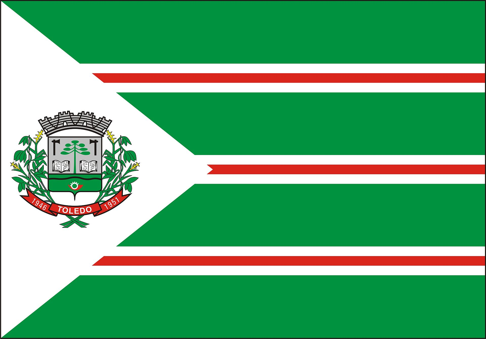
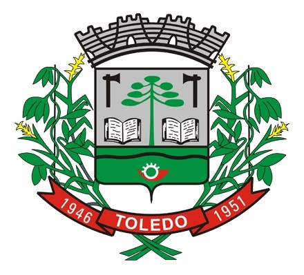

Toledo é um município brasileiro localizado na região oeste do Paraná. Com seu solo fértil e plano, tornou-se um dos maiores produtores de grãos do estado. Concentra empresas do ramo agropecuário, razão pela qual é considerado a "Capital do Agronegócio do Paraná." Com uma população estimada pelo IBGE em 144 601 habitantes no ano de 2021, Toledo é o 12º mais populoso município do Paraná e 36º da Região Sul do Brasil. A distância rodoviária até Curitiba, capital administrativa estadual, é de 540 km, e de Brasília, capital federal, de 1 432 km.
Toledo está situado numa região de colonização recente e que recebeu seus primeiros moradores em 27 de março de 1946, quando colonos oriundos do atual município gaúcho de São Marcos, então distrito de Caxias do Sul, chegaram à área atual, na época pertencente ao Território Federal do Iguaçu. Em 1951 foi emancipado de Foz do Iguaçu pela Lei nº 790, sancionada pelo governador do Paraná, Bento Munhoz da Rocha Neto.
Toledo é uma cidade de Estado do Paraná. Os habitantes se chamam toledenses. O município se estende por 1 197 km² e contava com 140 635 habitantes no último censo. A densidade demográfica é de 117,5 habitantes por km² no território do município. Vizinho dos municípios de Ouro Verde do Oeste, Tupãssi e Santa Tereza do Oeste,Toledo se situa a 39 km a Norte-Oeste de Cascavel. Situado a 550 metros de altitude, de Toledo tem as seguintes coordenadas geográficas: Latitude: 24° 43' 12'' Sul, Longitude: 53° 44' 36'' Oeste.
O prefeito de Toledo se chama LUIS ADALBERTO BETO LUNITTI PAGNUSSATT.
Mapa da localização de Toledo:
História
Toledo está situado numa região de colonização recente e que recebeu seus primeiros moradores em 27 de março de 1946, quando colonos oriundos do atual município gaúcho de São Marcos, então distrito de Caxias do Sul, chegaram à área atual, na época pertencente ao Território Federal do Iguaçu. Em 1951 foi emancipado de Foz do Iguaçu pela Lei nº 790, sancionada pelo governador do Paraná, Bento Munhoz da Rocha Neto.
A primeira eleição ocorreu em 9 de novembro de 1952, com a instalação oficial do município em 14 de dezembro do mesmo ano, quando a primeira legislatura da Câmara Municipal eleita deu posse ao prefeito Ernesto Dall'Oglio (1952/1956).
O impulso para a criação de Toledo ocorreu quando a "Industrial Madeireira e Colonizadora Rio Paraná S/A - MARIPÁ" adquiriu junto à uma companhia imobiliária inglesa a gleba de terras denominada Fazenda Britânia, para em seguida ocupá-la e desbravá-la com os colonos trazidos do Rio Grande do Sul.
A atividade inicial foi a extração de madeira para atender os mercados da Argentina e Uruguai. O plano de colonização fundamentou-se em pequenas propriedades.
A iniciativa privada desenvolveu um arrojado projeto de colonização, com a venda de pequenas propriedades medindo entre dez a quinze alqueires paulistas, a maioria com acesso à água, o que dificultou a criação de latifúndios.
A partir daí o desenvolvimento ocorreu de forma acelerada, inicialmente em torno da economia das comunidades agrícolas, o que emprestou à sociedade um forte espírito gregário.
Entre as décadas de 1960 para 1970, a modernização da produção imprimiu novas relações no campo e a especialização favoreceu a monocultura e a concentração de propriedade, o que resultou no êxodo rural e a acelerada urbanização.
A suinocultura, que era atividade complementar para os pioneiros, desenvolveu-se rapidamente na década de 1950, culminando com a fundação do "Frigorífico Pioneiro S/A", que teve seu controle acionário adquirido pela empresa Sadia, no ano de 1964, que por sua vez implementou o sistema de integração nas áreas de aves e suínos, além de um complexo fabril que a tornou a maior indústria do município. Inicialmente atuava por meio da Frigobrás, mas após a incorporação desta à Sadia, o setor de compras foi transferido para outra localidade. Mais recentemente a fusão entre a Sadia e a Perdigão, atual BRF, motivou a transferência da área administrativa para Curitiba, mas o complexo fabril permanece inalterado, com cerca de sete mil trabalhadores e uma produção que atende o mercado interno e externo. Na década de 1990, a Sadia passou a investir na ampliação da área suinícola, fazendo Toledo expandir seu rebanho, de 100 mil para mais de 400 mil cabeças.
Referências:
Cidade Brasil
Wikipedia
VITHOR HUGO PLUCINSKI
RA: 00220128
TOLEDO
Vista Aérea de Toledo

Bandeira de Toledo
